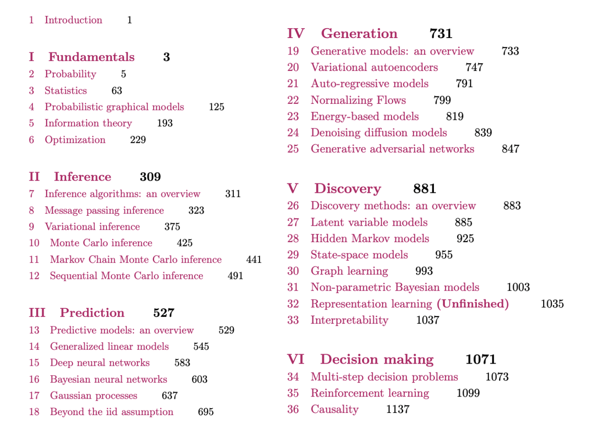

Probabilistic Machine Learning: Advanced Topics
by Kevin Patrick Murphy.
MIT Press, 2023.

Key links
If you use this book, please be sure to cite
@book{pml2Book,
author = "Kevin P. Murphy",
title = "Probabilistic Machine Learning: Advanced Topics",
publisher = "MIT Press",
year = 2023,
url = "probml.ai"
}
Downloads since 2022-02-28.


Endorsements
- "Whether teaching machine learning to undergrads, master students, or PhD students,
I found myself time and time again choosing the 2012 "Machine Learning: A Probabilistic Perspective" as the primary textbook.
When I heard about the new "Probabilistic Machine Learning" series, I was thrilled to see the expanded and modernized set of topics;
this will be the go-to book for my ML courses at Stanford. Kevin Murphy has a phenomenal ability to go deep while making topics
digestible to a broad audience. His writing is clear and concise with great visuals throughout. I highly recommend this as "the book"
for anyone wanting to become a well-versed ML expert." -- Emily Fox, Stanford.
- "Murphy’s book is certainly the most comprehensive resource on machine learning available today.
With the growing body of research in the field,
it is a daunting challenge to provide an organized perspective of the current state of knowledge.
This book achieves this feat by integrating classic material, like MCMC inference,
with very recent developments like denoising diffusion models.
The material is organized and presented in a very accessible and intuitive manner,
making the book an asset for any researcher or practitioner in the field." --
Amir Globerson, Tel Aviv University.
Acknowledgements
I would like to thank the following people for helping with this book.
- People who helped write some of the sections
(details in the preface):
Alex Alemi (Google),
Marco Cuturi (Apple, work done at Google),
Jeff Bilmes (U. Washington),
Justin Gilmer (Google),
Roy Frostig (Google),
Andrew Wilson (NYU),
George Papamakarios (Deepmind),
Balaji Lakshminarayanan (Google),
Yang Song (Stanford),
Durk Kingma (Google),
Mihaela Rosca (Deepmind / UCL),
Shakir Mohamed (Deepmind),
Vinayak Rao (Purdue),
Ben Poole (Google),
Simon Kornblith (Google),
Been Kim (Google),
Finale Doshi-Velez (Harvard),
Lihong Li (Amazon, work done at Google),
Victor Veitch (Google / U. Chicago),
Alexander D'Amour (Google).
- People who helped with the code and figures:
Mahmoud Soliman, Aleyna Kara, Gerardo Durán-Martín, Zeel Patel,
and others
listed here.